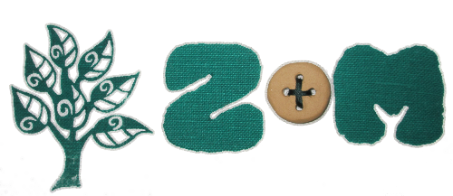

Budeme se brát.
V sobotu 21. 6. 2014 v 14:30 v Ořešíně, Na ranči. Těšíme se na vás. Dejte nám prosím vědět, jestli přijdete. Nejpozději do 18. 5. 2014, ale čím dříve, tím lépe.
| 13:00 – 14:15 | Příchod hostů |
|---|---|
| 14:30 | Obřad |
| Potom | Jídlo, pití, tanec… |
Naše svatba nebude moc vystajlovaná a netřeba se ladit k barvě ubrousků. Budeme rádi, když svým oděním budete respektovat výjimečnost události, nicméně mějte na paměti, že svatba bude venku na louce. Takže jehlovými podpatky parádu dělat nemusíte. Určitě bude krásně. Ale možná taky ne. Možná bude padat štěstí. Pamatujte, že neexistuje špatné počasí, pouze špatně oblečený svatebčan.
Obřad i oslava se bude konat v Ořešíně, Na ranči. Na místo se nejlépe dostanete, když pojedete autobusem číslo 70 (od Semilassa) na konečnou zastávku Ořešín a pak půjdete kousek (850 m) nahoru. Vhodné spoje od Semilassa vyjíždí v tyto časy:
| 12:25 | 14:25 |
|---|---|
| 12:45 | 14:45 |
| 13:05 |
Domů se dostanete jednoduše zase busem č. 70 nebo rozjezdem č. 90, který jezdí ze stejné zastávky v tyto časy:
| 22:30 | 2:30 |
|---|---|
| 23:00 | 3:30 |
| 0:00 | 4:30 |
| 1:00 | 5:10 |
Samozřejmě můžete přijet i autem, ale to moc nedoporučujeme, protože místa k parkování jsou dost omezená (a také doufáme, že si s námi připijete).
Máme rádi párty. Proto největším darem bude, když s námi přijdete náš den oslavit. Domácnost máme vybavenou více než bychom si přáli, proto, jak už to dnes bývá, oceníme dary finanční. Máme několik tipů, na co by se nám peníze hodily. Na svatbě budete mít možnost každou svou korunku přidělit konkrétnímu účelu.
Začli jsme si spolu na školním výletě v Hodoníně u Kunštátu 20. 6. 2003.
Pak jsme spolu 10 let chodili.
20. 6. 2013 jsme se jeli zas podívat do Hodonína u Kunštátu.
A do roka a do dne…